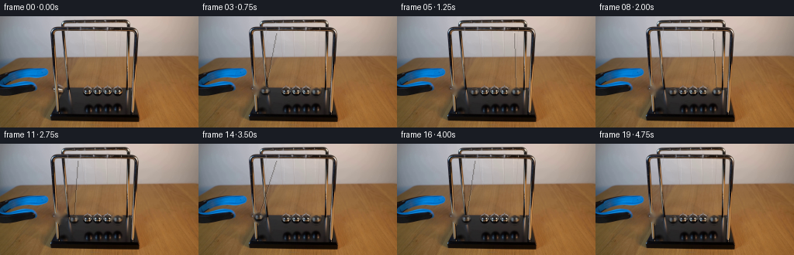
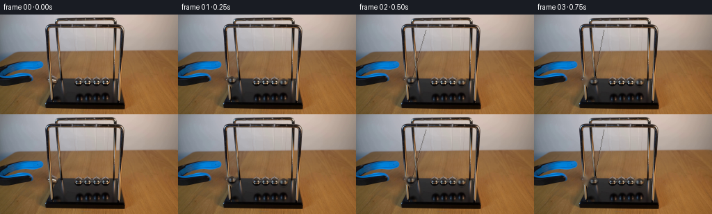
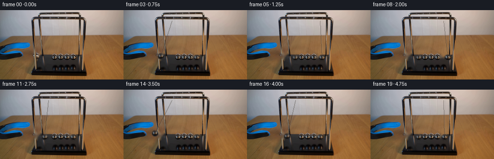
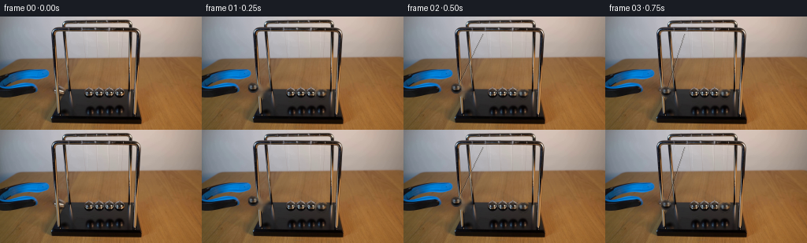

CODING AGENTS AS PIXEL WORLD MODELS
traex/DeepSeek-V4.1-Flash · 0161
点击播放 · 原生 RGB 像素
逐轮保存的候选
回放视频、检查图与代码变化。
每份候选均可单独播放。实际图片检查记录在下方工具轨迹中。
候选 01播放与检查图
点击播放 · 原生 RGB 像素


展开代码变化
--- 上一保存版本
+++ 本次保存版本
@@ -0,0 +1,196 @@
+from pathlib import Path
+import math
+
+import cv2
+import numpy as np
+from PIL import Image
+
+import artifact_io
+
+
+CASE_DIR = Path(__file__).resolve().parent
+W, H, N, FPS = 256, 144, 20, 4
+
+HELD_PIVOT = (99.5, 21.5)
+HELD_LENGTH = 77.0
+HELD_REST_X = 99.5
+HELD_START_X = 77.3
+HELD_ANGLE = math.asin((HELD_REST_X - HELD_START_X) / HELD_LENGTH)
+
+RIGHT_PIVOT = (151.4, 21.5)
+RIGHT_LENGTH = 77.0
+RIGHT_ANGLE = 0.066
+
+BALL_RADIUS = 6.3
+
+
+def _circle_mask(shape, center, radius):
+ mask = np.zeros(shape[:2], np.uint8)
+ cv2.circle(
+ mask,
+ (int(round(center[0])), int(round(center[1]))),
+ int(round(radius)),
+ 255,
+ -1,
+ lineType=cv2.LINE_AA,
+ )
+ return mask
+
+
+def _extract_ball(image, center, radius=BALL_RADIUS):
+ size = int(math.ceil(radius * 2.0 + 3.0))
+ if size % 2 == 0:
+ size += 1
+ patch = cv2.getRectSubPix(
+ image.astype(np.float32), (size, size), (float(center[0]), float(center[1]))
+ )
+
+ yy, xx = np.mgrid[:size, :size]
+ local_center = (size - 1) * 0.5
+ distance = np.hypot(xx - local_center, yy - local_center)
+ alpha = np.clip(radius + 0.6 - distance, 0.0, 1.0)
+ alpha = alpha * alpha * (3.0 - 2.0 * alpha)
+
+ # Keep the photographed specular response, but suppress the tabletop just
+ # outside the sphere's silhouette.
+ color = patch.copy()
+ color[alpha <= 0.0] = 0.0
+ return color, alpha.astype(np.float32)
+
+
+def _draw_ball(frame, sprite, alpha, center, scale=1.0):
+ color, mask = sprite
+ size = color.shape[0]
+ source_center = (size - 1) * 0.5
+ matrix = cv2.getRotationMatrix2D((source_center, source_center), 0.0, scale)
+ matrix[0, 2] += center[0] - source_center
+ matrix[1, 2] += center[1] - source_center
+
+ warped_color = cv2.warpAffine(
+ color,
+ matrix,
+ (W, H),
+ flags=cv2.INTER_LINEAR,
+ borderMode=cv2.BORDER_CONSTANT,
+ borderValue=(0.0, 0.0, 0.0),
+ )
+ warped_alpha = cv2.warpAffine(
+ mask,
+ matrix,
+ (W, H),
+ flags=cv2.INTER_LINEAR,
+ borderMode=cv2.BORDER_CONSTANT,
+ borderValue=0.0,
+ )
+ a = np.clip(warped_alpha[..., None], 0.0, 1.0)
+ frame *= 1.0 - a
+ frame += warped_color * a
+
+
+def _draw_wire(frame, start, end, strength=0.42):
+ overlay = frame.copy()
+ p0 = (int(round(start[0])), int(round(start[1])))
+ p1 = (int(round(end[0])), int(round(end[1])))
+ cv2.line(overlay, p0, p1, (24.0, 20.0, 16.0), 1, cv2.LINE_AA)
+ cv2.line(overlay, (p0[0] + 1, p0[1]), (p1[0] + 1, p1[1]), (142.0, 136.0, 126.0), 1, cv2.LINE_AA)
+ frame *= 1.0 - strength
+ frame += overlay * strength
+
+
+def _held_angle(t):
+ release_t = 0.35
+ contact_t = 1.05
+ return_t = 2.65
+ settle_t = 4.25
+
+ if t < release_t:
+ return -HELD_ANGLE
+ if t < contact_t:
+ u = (t - release_t) / (contact_t - release_t)
+ return -HELD_ANGLE * math.cos(0.5 * math.pi * u)
+ if t < return_t:
+ return 0.0
+ if t < settle_t:
+ u = (t - return_t) / (settle_t - return_t)
+ return -HELD_ANGLE * math.sin(math.pi * u)
+ return 0.0
+
+
+def _right_angle(t):
+ contact_t = 1.05
+ return_t = 2.65
+ second_contact_t = 4.25
+ end_t = 5.0
+
+ if contact_t <= t < return_t:
+ u = (t - contact_t) / (return_t - contact_t)
+ return RIGHT_ANGLE * math.sin(math.pi * u)
+ if second_contact_t <= t < end_t:
+ u = (t - second_contact_t) / (return_t - contact_t)
+ return 0.25 * RIGHT_ANGLE * math.sin(math.pi * u)
+ return 0.0
+
+
+def _pendulum_position(pivot, length, angle):
+ return (
+ pivot[0] + length * math.sin(angle),
+ pivot[1] + length * math.cos(angle),
+ )
+
+
+def generate():
+ original = np.asarray(Image.open(CASE_DIR / "first_frame.png").convert("RGB"), dtype=np.uint8)
+
+ mask = np.zeros((H, W), np.uint8)
+ mask = cv2.bitwise_or(mask, _circle_mask((H, W), (77.7, 95.0), 7.6))
+ mask = cv2.bitwise_or(mask, _circle_mask((H, W), (151.4, 98.4), 7.5))
+ clean = cv2.inpaint(original, mask, 5, cv2.INPAINT_TELEA)
+
+ held_sprite = _extract_ball(original, (112.6, 98.4), 6.25)
+ right_sprite = _extract_ball(original, (151.4, 98.4), 6.25)
+
+ frames = np.empty((N, H, W, 3), np.uint8)
+ frames[0] = original
+
+ for index in range(1, N):
+ t = index / FPS
+ frame = clean.astype(np.float32)
+
+ held_angle = _held_angle(t)
+ right_angle = _right_angle(t)
+ held_center = _pendulum_position(HELD_PIVOT, HELD_LENGTH, held_angle)
+ right_center = _pendulum_position(RIGHT_PIVOT, RIGHT_LENGTH, right_angle)
+
+ held_speed = abs(_held_angle(t + 0.02) - _held_angle(t - 0.02)) / 0.04
+ right_speed = abs(_right_angle(t + 0.02) - _right_angle(t - 0.02)) / 0.04
+ if held_speed > 0.04:
+ _draw_wire(frame, HELD_PIVOT, held_center, 0.34)
+ if right_speed > 0.02:
+ _draw_wire(frame, RIGHT_PIVOT, right_center, 0.30)
+
+ _draw_ball(frame, right_sprite, right_sprite[1], right_center, 1.0)
+ _draw_ball(frame, held_sprite, held_sprite[1], held_center, 0.98)
+
+ # A tiny amount of directional blur keeps the 4 fps swing from reading
+ # as a single teleporting sprite.
+ if held_speed > 0.30:
+ trail_angle = _held_angle(t - 0.035)
+ trail_center = _pendulum_position(HELD_PIVOT, HELD_LENGTH, trail_angle)
+ trail = frame.copy()
+ _draw_ball(trail, held_sprite, held_sprite[1], trail_center, 0.98)
+ frame = frame * 0.90 + trail * 0.10
+ if right_speed > 0.10:
+ trail_angle = _right_angle(t - 0.035)
+ trail_center = _pendulum_position(RIGHT_PIVOT, RIGHT_LENGTH, trail_angle)
+ trail = frame.copy()
+ _draw_ball(trail, right_sprite, right_sprite[1], trail_center, 1.0)
+ frame = frame * 0.92 + trail * 0.08
+
+ frames[index] = np.clip(frame + 0.5, 0.0, 255.0).astype(np.uint8)
+
+ artifact_io.save(frames, CASE_DIR)
+ return frames
+
+
+if __name__ == "__main__":
+ generate()
候选 02播放与检查图
点击播放 · 原生 RGB 像素
展开代码变化
--- 上一保存版本
+++ 本次保存版本
@@ -14,12 +14,12 @@
HELD_PIVOT = (99.5, 21.5)
HELD_LENGTH = 77.0
HELD_REST_X = 99.5
-HELD_START_X = 77.3
+HELD_START_X = 77.7
HELD_ANGLE = math.asin((HELD_REST_X - HELD_START_X) / HELD_LENGTH)
RIGHT_PIVOT = (151.4, 21.5)
RIGHT_LENGTH = 77.0
-RIGHT_ANGLE = 0.066
+RIGHT_ANGLE = 0.083
BALL_RADIUS = 6.3
@@ -48,7 +48,7 @@
yy, xx = np.mgrid[:size, :size]
local_center = (size - 1) * 0.5
distance = np.hypot(xx - local_center, yy - local_center)
- alpha = np.clip(radius + 0.6 - distance, 0.0, 1.0)
+ alpha = np.clip(radius + 0.9 - distance, 0.0, 1.0)
alpha = alpha * alpha * (3.0 - 2.0 * alpha)
# Keep the photographed specular response, but suppress the tabletop just
@@ -173,18 +173,18 @@
# A tiny amount of directional blur keeps the 4 fps swing from reading
# as a single teleporting sprite.
- if held_speed > 0.30:
+ if held_speed > 0.48:
trail_angle = _held_angle(t - 0.035)
trail_center = _pendulum_position(HELD_PIVOT, HELD_LENGTH, trail_angle)
trail = frame.copy()
_draw_ball(trail, held_sprite, held_sprite[1], trail_center, 0.98)
- frame = frame * 0.90 + trail * 0.10
- if right_speed > 0.10:
+ frame = frame * 0.94 + trail * 0.06
+ if right_speed > 0.24:
trail_angle = _right_angle(t - 0.035)
trail_center = _pendulum_position(RIGHT_PIVOT, RIGHT_LENGTH, trail_angle)
trail = frame.copy()
_draw_ball(trail, right_sprite, right_sprite[1], trail_center, 1.0)
- frame = frame * 0.92 + trail * 0.08
+ frame = frame * 0.95 + trail * 0.05
frames[index] = np.clip(frame + 0.5, 0.0, 255.0).astype(np.uint8)
候选 03播放与检查图
候选 04播放与检查图
点击播放 · 原生 RGB 像素


展开代码变化
--- 上一保存版本 +++ 本次保存版本 @@ -13,13 +13,13 @@ HELD_PIVOT = (99.5, 21.5) HELD_LENGTH = 77.0 -HELD_REST_X = 99.5 +HELD_REST_X = 112.5 HELD_START_X = 77.7 HELD_ANGLE = math.asin((HELD_REST_X - HELD_START_X) / HELD_LENGTH) RIGHT_PIVOT = (151.4, 21.5) RIGHT_LENGTH = 77.0 -RIGHT_ANGLE = 0.083 +RIGHT_ANGLE = 0.115 BALL_RADIUS = 6.3
可观测工具轨迹
实际执行的命令与返回图片。
命令 1exit 0
/bin/bash -c "pwd && rg --files -g '"'!*'"\\.git/*' | sed -n '1,120p'"
命令 2exit 0
/bin/bash -c "sed -n '1,240p' prompt.txt"
命令 3exit 0
/bin/bash -c "sed -n '1,280p' GENERATION_RULES.md"
命令 4exit 0
/bin/bash -c 'file first_frame.png && identify first_frame.png 2>/dev/null || true && ls -lah'
命令 5exit 0
/bin/bash -c "python - <<'PY'
from PIL import Image
import numpy as np
im=Image.open('first_frame.png').convert('RGB')
a=np.asarray(im)
print('size',im.size,'dtype',a.dtype,'min/max',a.min(),a.max())
print('mean',a.mean((0,1)),'std',a.std((0,1)))
# quantized 32 levels clusters
q=(a//32)*32
cols,cnts=np.unique(q.reshape(-1,3),axis=0,return_counts=True)
for i in np.argsort(cnts)[-30:][::-1]: print(tuple(cols[i]),cnts[i])
PY"命令 6exit 0
/bin/bash -c "sed -n '1,260p' artifact_io.py"
命令 7exit 0
/bin/bash -c "sed -n '1,260p' player_template.html"
命令 8exit 0
/bin/bash -c "python - <<'PY'
try:
import cv2; print('cv2',cv2.__version__)
except Exception as e: print('no cv2',e)
try:
import scipy; print('scipy',scipy.__version__)
except Exception as e: print('no scipy',e)
try:
import imageio; print('imageio',imageio.__version__)
except Exception as e: print('no imageio',e)
PY"命令 9exit 0
/bin/bash -c "python - <<'PY'
import cv2, numpy as np
im=cv2.imread('first_frame.png')
g=cv2.cvtColor(im,cv2.COLOR_BGR2GRAY)
for p2 in [18,16,14,12,10,8]:
c=cv2.HoughCircles(g,cv2.HOUGH_GRADIENT,dp=1,minDist=8,param1=80,param2=p2,minRadius=3,maxRadius=20)
print('p2',p2, None if c is None else np.round(c[0],1).tolist()[:30])
PY"命令 10exit 0
/bin/bash -c "python - <<'PY'
from PIL import Image
import numpy as np
im=np.array(Image.open('first_frame.png'))
# ANSI blocks downsampled every 4px, print with truecolor background
small=np.array(Image.fromarray(im).resize((64,36),Image.Resampling.BILINEAR))
for y in range(36):
print(''.join(f'\\x1b[48;2;{r};{g};{b}m ' for r,g,b in small[y])+'\\x1b[0m')
PY"命令 11exit 0
/bin/bash -c "python - <<'PY'
from PIL import Image
import numpy as np, colorsys
im=np.asarray(Image.open('first_frame.png')).astype(float)
hsv=np.asarray(Image.open('first_frame.png').convert('HSV')).astype(float)
# 2x2 nearest-ish average
im=im[::2,::2]; hsv=hsv[::2,::2]
for y in range(im.shape[0]):
s=''
for x in range(im.shape[1]):
r,g,b=im[y,x]; h,sat,v=hsv[y,x]
if v<45: c='#'
elif h>130 and h<190 and sat>90 and b>70: c='B' # PIL hue blue ~170
elif sat>90 and h<45 and r>g>b: c='='
elif v>170 and sat<55: c='O'
elif v>130 and sat<80: c='o'
elif sat>60 and h<60: c='-'
elif v<80: c='d'
else: c='.'
s+=c
print(f'{y*2:3d} '+s)
PY"命令 12exit 0
/bin/bash -c "python - <<'PY'
from PIL import Image
import numpy as np
im=np.asarray(Image.open('first_frame.png'))
# print RGB grid over key area at 2x2 avg with coarse color chars more diagnostic
# metallic balls likely x 120..165, y 92..126
for y in range(88,132,2):
vals=[]
for x in range(100,180,2):
p=im[y:y+2,x:x+2].mean((0,1)).astype(int)
# hex
vals.append('%02x%02x%02x'%tuple(p))
print(y,' '.join(vals))
PY"命令 13exit 0
/bin/bash -c "python - <<'PY'
from PIL import Image
import numpy as np
im=np.asarray(Image.open('first_frame.png'))
# save enlarged crops to tmp using nearest, allowed local drawing; cannot view visually but can derive via coords
Image.fromarray(im[50:135,80:190]).resize((660,510),Image.Resampling.NEAREST).save('.tmp/crop_cradle.png')
# print row/col edge energy; gradient sums
g=np.asarray(Image.open('first_frame.png').convert('L'),dtype=float)
gx=np.abs(np.diff(g,axis=1)); gy=np.abs(np.diff(g,axis=0))
for y in range(70,132,2): print(y, int(gy[y,90:180].sum()), int(gx[y,90:180].sum()))
print('col')
for x in range(90,181,2): print(x,int(gy[80:132,x].sum()),int(gx[80:132,x].sum()))
PY"命令 14exit 0
/bin/bash -c "python - <<'PY'
from PIL import Image
import numpy as np
im=np.asarray(Image.open('first_frame.png'))
# crop y 85:130 x100:180, output 6x avg with luminance chars and HSV hue markers
for y in range(84,132):
s=''
for x in range(100,180):
r,g,b=im[y,x]
v=(int(r)+int(g)+int(b))//3
if v>175: c='@'
elif v>145: c='O'
elif v>115: c='o'
elif v>85: c='+'
elif v>60: c='.'
elif v>35: c=','
else: c=' '
s+=c
print(f'{y:3d} {s}')
PY"命令 15exit 0
/bin/bash -c "python - <<'PY'
from PIL import Image
import numpy as np
im=np.asarray(Image.open('first_frame.png'))
# map y 0..144 x0..256 at 4x4 average with hue categories using KMeans perhaps print actual colors reduced to named
for y in range(0,144,4):
s=''
for x in range(0,256,4):
p=im[y:y+4,x:x+4].reshape(-1,3).mean(0)
r,g,b=p
if r>140 and g>140 and b>140: c='W'
elif b>r*1.25 and b>g*1.15: c='B'
elif r>g*1.35 and g>b*1.15 and r>100: c='b' # brown
elif r>g*1.35 and g>b*1.15: c='d'
elif max(p)<45: c='#'
elif max(p)<80: c='.'
elif max(p)<115: c=','
else: c=' '
s+=c
print(f'{y:3d} '+s)
PY"命令 16exit 0
/bin/bash -c "python - <<'PY'
import cv2, numpy as np
im=cv2.imread('first_frame.png')
# inspect threshold components for likely balls: bright neutral pixels in cradle crop
crop=im[88:130,100:180]
lab=cv2.cvtColor(crop,cv2.COLOR_BGR2LAB)
g=cv2.cvtColor(crop,cv2.COLOR_BGR2GRAY)
for t in [70,90,110,130,150]:
m=(g>t).astype('uint8')*255
n,l,st,c=cv2.connectedComponentsWithStats(m,8)
comps=sorted([(int(s[4]),tuple(map(int,s[:4])),tuple(np.round(cc,1))) for s,cc in zip(st[1:],c[1:])],reverse=True)
print('t',t,comps[:20])
PY"命令 17exit 0
/bin/bash -c "python - <<'PY'
from PIL import Image
import numpy as np
im=np.asarray(Image.open('first_frame.png'))
# print high brightness pixels and local maxima in region 90:105, 50:180
g=np.asarray(Image.open('first_frame.png').convert('L'))
for y in range(88,106):
xs=np.where(g[y]>100)[0]
xs=xs[(xs>45)&(xs<190)]
# runs
runs=[]
if len(xs):
cuts=np.where(np.diff(xs)>1)[0]
starts=np.r_[0,cuts+1]; ends=np.r_[cuts,len(xs)-1]
runs=[(int(xs[a]),int(xs[b]),int(g[y,xs[a]:xs[b]+1].max())) for a,b in zip(starts,ends)]
print(y,runs)
PY"命令 18exit 0
/bin/bash -c "python - <<'PY'
from PIL import Image
import numpy as np
im=np.asarray(Image.open('first_frame.png'))
# detailed x88:174 y86:110 chars based on RGB categories
for y in range(84,112):
s=''
for x in range(84,180):
r,g,b=map(int,im[y,x])
mx=max(r,g,b); mn=min(r,g,b); sat=mx-mn
if mx>210 and sat<25: c='@'
elif mx>175 and sat<35: c='O'
elif mx>140 and sat<45: c='o'
elif mx>105 and sat<60: c='+'
elif mx>70 and sat<75: c='.'
elif mx>35: c=','
else: c=' '
s+=c
print(f'{y:3d} {s}')
print(' '+''.join(str(x//10%10) for x in range(84,180)))
print(' '+''.join(str(x%10) for x in range(84,180)))
PY"命令 19exit 0
/bin/bash -c "python - <<'PY'
from PIL import Image
import numpy as np
im=np.asarray(Image.open('first_frame.png'))
# write crop color as PPM? analyze ball centers via correlation with sphere-ish bright blobs.
# print region x104-163 y90-104 raw grayscale integer
g=np.asarray(Image.open('first_frame.png').convert('L'))
for y in range(90,104):
print(f'{y:3d}', ' '.join(f'{g[y,x]:3d}' for x in range(104,164)))
PY"命令 20exit 0
/bin/bash -c "python - <<'PY'
import cv2, numpy as np
im=cv2.imread('first_frame.png')
g=cv2.cvtColor(im,cv2.COLOR_BGR2GRAY)
e=cv2.Canny(g,40,100)
# block edge counts 8x8
for by in range(0,144,8):
print(f'{by:3d}', ''.join(' .:-=+*#%@'[min(9,int(e[by:by+8,bx:bx+8].sum()/8))] for bx in range(0,256,8)))
PY"命令 21exit 0
/bin/bash -c "python - <<'PY'
from PIL import Image
import numpy as np
im=np.asarray(Image.open('first_frame.png'))
g=np.asarray(Image.open('first_frame.png').convert('L'))
for y in range(72,102):
print(f'{y:3d}', ' '.join(f'{g[y,x]:3d}' for x in range(64,104)))
PY"命令 22exit 0
/bin/bash -c "python - <<'PY'
from PIL import Image
import numpy as np
im=np.asarray(Image.open('first_frame.png'))
# print RGB for region around blue object 0:95, y60:130, 4x4 averages as hex grid
for y in range(60,132,4):
print(f'{y:3d}', ' '.join('%02x%02x%02x'%tuple(im[y:y+4,x:x+4].mean((0,1)).astype(int)) for x in range(0,96,4)))
PY"命令 23exit 0
/bin/bash -c "python - <<'PY'
from PIL import Image
import numpy as np
im=np.asarray(Image.open('first_frame.png').convert('L')).astype(float)
gx=np.abs(np.diff(im,axis=1)); gy=np.abs(np.diff(im,axis=0))
for y in [20,24,28,40,50,60,70,80,90,100,110,120,126]:
# top peaks in x
v=gx[y]
inds=np.argsort(v)[-20:][::-1]
print('y',y,[(int(i),int(v[i])) for i in inds[:15]])
PY"命令 24exit 0
/bin/bash -c "python - <<'PY'
from PIL import Image
import numpy as np
im=np.asarray(Image.open('first_frame.png'))
# luminance ascii x50:190 y80:135, 1 char per px with wider contrast
g=np.asarray(Image.open('first_frame.png').convert('L'))
chars=' .,:;irsXA253hMHGS#9B&@'
for y in range(80,136):
print(f'{y:3d}', ''.join(chars[min(len(chars)-1,int(g[y,x]/256*len(chars)))] for x in range(50,190)))
print(' '+''.join(str(x//10%10) for x in range(50,190)))
print(' '+''.join(str(x%10) for x in range(50,190)))
PY"命令 25exit 0
/bin/bash -c "python - <<'PY'
from PIL import Image
import numpy as np
im=np.asarray(Image.open('first_frame.png'))
# print first frame as RGB hex matrix every 2px only grayscale crop for balls x100:165 y90:106
for y in range(88,108):
print(y)
for x in range(100,165,5):
p=im[y,x]
print(f' x{x}:{p[0]:02x}{p[1]:02x}{p[2]:02x}',end='')
print()
PY"命令 26exit 0
/bin/bash -c "python - <<'PY'
from PIL import Image
import numpy as np
im=np.asarray(Image.open('first_frame.png'))
# RGB in cradle region 108:165, 90:126 as sixel not. save enlarged contrast crop and extract edges
crop=im[88:130,104:168]
Image.fromarray(crop).resize((512,336),Image.Resampling.NEAREST).save('.tmp/balls_near.png')
# bright-neutral connected blob centroids threshold by L and color variance
for t in [70,85,100,115,130,145,160]:
m=(crop.mean(2)>t)&(crop.max(2)-crop.min(2)<40)
n,l,st,c=cv2.connectedComponentsWithStats(m.astype('uint8'),8) if False else (None,None,None,None)
PY"命令 27exit 0
/bin/bash -c "python - <<'PY'
from PIL import Image
import numpy as np
im=np.asarray(Image.open('first_frame.png')).astype(float)
# fit known five sphere highlights: centers expected roughly x109,122,135,148,161 y98
# print luminance crop with 2x horizontal compression using half blocks maybe
g=im.mean(2)
for y in range(86,110):
s=''
for x in range(100,170):
v=g[y,x]
s += ' .:-=+*#%@'[min(9,int(v/256*10))]
print(f'{y:3d}',s)
PY"命令 28exit 0
/bin/bash -c "python - <<'PY'
from PIL import Image
import numpy as np
a=np.asarray(Image.open('first_frame.png')).astype(int)
g=a.mean(2)
for y in range(90,106):
xs=np.where(g[y]>130)[0]
xs=xs[(xs>=95)&(xs<=180)]
runs=[]
if len(xs):
cuts=np.where(np.diff(xs)>1)[0]
for st,en in zip(np.r_[0,cuts+1],np.r_[cuts,len(xs)-1]):
runs.append((int(xs[st]),int(xs[en]),round(float(g[y,xs[st]:xs[en]+1].max()))))
print(f'{y}: {runs}')
PY"命令 29exit 0
/bin/bash -c "python - <<'PY'
import cv2,numpy as np
im=cv2.imread('first_frame.png') # BGR
b,g,r=cv2.split(im)
blue=(b.astype(int)>r.astype(int)+25)&(b.astype(int)>g.astype(int)+5)&(b>55)
# connected comps
for name,m in [('blue',blue),('dark',(im.mean(2)<48)),('blue_or_dark',blue|(im.mean(2)<38))]:
m=(m.astype('uint8')*255)
n,l,st,c=cv2.connectedComponentsWithStats(m,8)
comps=sorted([(int(s[4]),tuple(map(int,s[:4])),tuple(np.round(cc,1))) for s,cc in zip(st[1:],c[1:])],reverse=True)
print(name, comps[:15])
PY"命令 30exit 0
/bin/bash -c "python - <<'PY'
import cv2, numpy as np
im=cv2.imread('first_frame.png')
# use segmentation of bright metal cluster from row 94 to 100, fit periodic highlight peaks
# find column local maxima of brightness in rows 94-99 and match at x centers
for x in range(90,175):
vals=[]
for y in range(94,101):
b,g,r=im[y,x]
vals.append(int(r)+int(g)+int(b))
print(x,max(vals))
PY"命令 31exit 0
/bin/bash -c "python - <<'PY'
import cv2, numpy as np
im=cv2.imread('first_frame.png')
g=cv2.cvtColor(im,cv2.COLOR_BGR2GRAY)
# find circles in ROI with Hough parameter variations and filter y90-105
roi=g[88:108,100:170]
for p1 in [30,50,80,100,120]:
for p2 in [4,5,6,7,8,9,10]:
c=cv2.HoughCircles(roi,cv2.HOUGH_GRADIENT,dp=1,minDist=6,param1=p1,param2=p2,minRadius=3,maxRadius=8)
if c is not None:
arr=np.round(c[0],1)
arr=arr[(arr[:,1]<15)&(arr[:,0]>0)]
if len(arr): print(p1,p2,arr.tolist())
PY"命令 32exit 0
/bin/bash -c "python - <<'PY'
from PIL import Image
import numpy as np
im=np.asarray(Image.open('first_frame.png'))
g=im.mean(2)
chars=' .:-=+*#%@'
for y in range(50,100):
print(f'{y:3d}', ''.join(chars[min(9,int(g[y,x]/256*10))] for x in range(30,85)))
print(' '+''.join(str(x//10%10) for x in range(30,85)))
print(' '+''.join(str(x%10) for x in range(30,85)))
PY"命令 33exit 0
/bin/bash -c "python - <<'PY'
from PIL import Image
import numpy as np
im=np.asarray(Image.open('first_frame.png'))
# chars preserving blue and dark structure in left object
chars=' .:-=+*#%@'
for y in range(0,144,2):
s=''
for x in range(0,128,1):
r,g,b=im[y,x]
# only blue and dark
if b>r+25 and b>g+5 and b>50:
v=(int(r)+int(g)+int(b))/3
c=chars[min(9,int(v/150*10))]
s+=c.upper() if c"'!='"' ' else ' '
elif max(r,g,b)<45:
s+=' '
else:
s+='.'
print(f'{y:3d}',s)
PY"命令 34exit 0
/bin/bash -c "python - <<'PY'
from PIL import Image
import numpy as np
im=np.asarray(Image.open('first_frame.png')).astype(int)
# classify blue mask and report bounds by rows
for y in range(60,96,2):
xs=[]
for x in range(0,100):
r,g,b=im[y,x]
if b>r+20 and b>g+3 and b>45: xs.append(x)
if xs: print(y,min(xs),max(xs),len(xs))
PY"命令 35exit 0
/bin/bash -c "python - <<'PY'
from PIL import Image
import numpy as np
im=np.asarray(Image.open('first_frame.png')).astype(int)
# find exact dark/blue shape mask connected comps using cv2 around left
import cv2
m=((im[:,:,2]>im[:,:,0]+20)&(im[:,:,2]>im[:,:,1]+3)&(im[:,:,2]>45)).astype('uint8')
# dilation connect and report region bounds
n,l,st,c=cv2.connectedComponentsWithStats(m,8)
for s,cc in zip(st[1:],c[1:]):
if s[4]>20: print(s.tolist(),cc)
# rgb samples left object grid
for y in range(66,92,2):
print(y,' '.join('%02x%02x%02x'%tuple(im[y,x]) for x in range(0,64,2)))
PY"命令 36exit 0
/bin/bash -c "python - <<'PY'
from PIL import Image
import numpy as np
im=np.asarray(Image.open('first_frame.png')).astype(int)
g=im.mean(2)
chars=' .:-=+*#%@'
for y in range(84,106):
print(f'{y:3d}', ''.join(chars[min(9,int(g[y,x]/256*10))] for x in range(56,96)))
print(' '+''.join(str(x//10%10) for x in range(56,96)))
print(' '+''.join(str(x%10) for x in range(56,96)))
# rgb hex around bright blob
for y in range(91,100):
print(y,' '.join('%02x%02x%02x'%tuple(im[y,x]) for x in range(70,86)))
PY"命令 37exit 0
/bin/bash -c "python - <<'PY'
import cv2, numpy as np
im=cv2.imread('first_frame.png')
g=cv2.cvtColor(im,cv2.COLOR_BGR2GRAY)
for y in range(80,130):
xs=np.where(g[y]>160)[0]
if len(xs): print(y, xs.tolist())
PY"命令 38exit 0
/bin/bash -c "python - <<'PY'
from PIL import Image
import numpy as np
im=np.asarray(Image.open('first_frame.png')).astype(int)
# inspect x150..178 y85..130 to locate frame/wires
g=im.mean(2)
chars=' .:-=+*#%@'
for y in range(84,132):
print(f'{y:3d}', ''.join(chars[min(9,int(g[y,x]/256*10))] for x in range(150,180)))
print(' '+''.join(str(x%10) for x in range(150,180)))
PY"命令 39exit 0
/bin/bash -c "python - <<'PY'
from PIL import Image
import numpy as np
im=np.asarray(Image.open('first_frame.png')).astype(int)
# Analyze dark cradle structure and balls: row runs where blue/dark mask, 100:165
for y in range(90,126,2):
vals=[]
for x in range(100,170):
r,g,b=im[y,x]
if max(r,g,b)<55: c='#'
elif b>r+20 and b>g+3: c='B'
elif max(r,g,b)>120: c='O'
elif max(r,g,b)>80: c='o'
else: c='.'
vals.append(c)
print(f'{y:3d}', ''.join(vals))
print(' '+''.join(str(x//10%10) for x in range(100,170)))
print(' '+''.join(str(x%10) for x in range(100,170)))
PY"命令 40exit 0
/bin/bash -c "python - <<'PY'
from PIL import Image
import numpy as np
im=np.asarray(Image.open('first_frame.png')).astype(int)
# likely balls at centers: inspect exact color patterns around estimated x positions 110,123,136,149,? y98
for cx in [110,123,136,149,154,161]:
print('cx',cx)
for y in range(94,103):
print(' ',y,' '.join('%02x%02x%02x'%tuple(im[y,x]) for x in range(cx-4,cx+5)))
PY"命令 41exit 0
/bin/bash -c "python - <<'PY'
from PIL import Image
import numpy as np
im=np.asarray(Image.open('first_frame.png')).astype(int)
# Check gradients / periodicity along x at y96-99 for 100..165 using normalized brightness and colored highlights
g=im.mean(2)
for y in range(93,101):
v=g[y,100:166]
# smooth
sm=np.convolve(v,np.ones(3)/3,'same')
peaks=[i+100 for i in range(1,len(sm)-1) if sm[i]>sm[i-1] and sm[i]>=sm[i+1] and sm[i]>55]
print(y,peaks)
# manually list local maxima separated >5
for y in [96,97,99]:
v=g[y,100:166]
cand=[]
for i in range(2,len(v)-2):
if v[i]==max(v[i-2:i+3]): cand.append((i+100,round(v[i],1)))
print('ymax',y,cand)
PY"命令 42exit 0
/bin/bash -c "python - <<'PY'
from PIL import Image
import numpy as np
im=np.asarray(Image.open('first_frame.png')).astype(int)
# print blue pixel occupancy per x,y to see whole left tool silhouette; each 2x2 block if any blue
for y in range(0,144,2):
s=''
for x in range(0,140,1):
p=im[y:y+2,x]
m=((p[:,2]>p[:,0]+20)&(p[:,2]>p[:,1]+3)&(p[:,2]>45)).any()
s+='#' if m else ' '
print(f'{y:3d}',s)
PY"命令 43exit 0
/bin/bash -c "python - <<'PY'
from PIL import Image
import numpy as np
im=np.asarray(Image.open('first_frame.png')).astype(int)
# render full image as 128x72 2x2 blocks, dominant visual chars by hue and lum
for y in range(0,144,2):
s=''
for x in range(0,256,2):
p=im[y:y+2,x:x+2].reshape(-1,3).mean(0); r,g,b=p
if b>r+20 and b>g+3 and b>45: c='B'
elif max(p)<35: c='#'
elif r>g*1.3 and g>b*1.1: c='b' if max(p)>95 else 'd'
elif max(p)<70: c='.'
elif max(p)>180: c='W'
elif max(p)>125: c='o'
else: c=','
s+=c
print(f'{y:3d}',s)
PY"命令 44exit 0
/bin/bash -c "python - <<'PY'
from PIL import Image
import numpy as np
im=np.asarray(Image.open('first_frame.png')).astype(int)
# classify hue around balls and output RGB of top highlight columns, plus detect local variance/texture
for y in [96,97,98,99]:
print('y',y)
for x in range(106,159):
p=im[y,x]
if p.mean()>70:
print(x,tuple(p),end='; ')
print()
PY"命令 45exit 0
/bin/bash -c "python - <<'PY'
from PIL import Image
import numpy as np
im=np.asarray(Image.open('first_frame.png')).astype(int)
# RGB values in x105..162 y94..101 save as human readable color matrix via nearest named bins
# identify dark background to separate spheres: mask L>55 and local contrast
g=im.mean(2)
for y in range(91,103):
s=''
for x in range(100,166):
v=g[y,x]
s += ' .:-=+*#%@'[min(9,int(v/180*10))]
print(f'{y:3d}',s)
print(' '+''.join(str(x//10%10) for x in range(100,166)))
print(' '+''.join(str(x%10) for x in range(100,166)))
PY"命令 46exit 0
/bin/bash -c "python - <<'PY'
from PIL import Image
import numpy as np
im=np.asarray(Image.open('first_frame.png')).astype(int)
# grayscale around x90..172 y90..126 at full res, use 2 chars width? try raw 1
g=im.mean(2)
chars=' .:-=+*#%@'
for y in range(90,127):
print(f'{y:3d}', ''.join(chars[min(9,int(g[y,x]/256*10))] for x in range(90,172)))
print(' '+''.join(str(x//10%10) for x in range(90,172)))
print(' '+''.join(str(x%10) for x in range(90,172)))
PY"命令 47exit 0
/bin/bash -c "python - <<'PY'
from PIL import Image
import numpy as np
im=np.asarray(Image.open('first_frame.png')).astype(int)
# identify balls as periodic dark rings from x105 to 159. print brightness for each row 96-102 as sparkline chars
for y in range(94,103):
s=''
for x in range(100,166):
v=im[y,x].mean()
s += ' .:-=+*#%@'[min(9,int(v/40))]
print(y,s)
PY"命令 48exit 0
/bin/bash -c "python - <<'PY'
from PIL import Image
import numpy as np
im=np.asarray(Image.open('first_frame.png')).astype(int)
# balls likely centers from bright highlight pairs: clusters at x110,123,135,148,154? ball pitch 13, final one 161.
# inspect exact local patches with 4x4 avg as hex grid for x104..166 y90..104
for y in range(90,106,2):
print(y, ' '.join('%02x%02x%02x'%tuple(im[y:y+2,x:x+2].mean((0,1)).astype(int)) for x in range(104,168,2)))
PY"命令 49exit 0
/bin/bash -c "python - <<'PY'
from PIL import Image
import numpy as np
im=np.asarray(Image.open('first_frame.png')).astype(int)
# test periodic positions: inspect RGB at y96 around centers. derive 5 ball centers 109,122,135,148,154? Determine sphere diameter from dark gap at y101.
# print horizontal RGB line as block chars colored by dominant category
for y in [92,94,96,98,100,101,102]:
s=''
for x in range(100,166):
r,g,b=im[y,x]
if max(r,g,b)<35: c='#'
elif max(r,g,b)<55: c='d'
elif b>r+15 and b>g+2: c='B'
elif max(r,g,b)>120: c='W'
elif max(r,g,b)>85: c='o'
elif max(r,g,b)>60: c='+'
else: c='.'
s+=c
print(y,s)
PY"命令 50exit 0
/bin/bash -c 'command -v chafa || true; command -v viu || true; command -v jp2 || true; command -v img2txt || true; command -v ffmpeg || true; command -v convert || true; command -v magick || true'
命令 51exit 0
/bin/bash -c "python - <<'PY' import importlib.util mods=['torch','tensorflow','jax','matplotlib','skimage','sklearn','imageio_ffmpeg','moviepy'] for m in mods: print(m, bool(importlib.util.find_spec(m))) PY"
命令 52exit 0
/bin/bash -c "python - <<'PY' import torch print(torch.__version__, torch.cuda.is_available()) PY"
命令 53exit 0
/bin/bash -c "python - <<'PY'
from PIL import Image
import numpy as np
im=np.asarray(Image.open('first_frame.png')).astype(int)
# print x86..175 y84..127 with coords, high contrast chars with 180 scale
g=im.mean(2)
chars=' .:-=+*#%@'
for y in range(84,128):
print(f'{y:3d}', ''.join(chars[min(9,int(g[y,x]/180*10))] for x in range(86,176)))
print(' '+''.join(str(x//10%10) for x in range(86,176)))
print(' '+''.join(str(x%10) for x in range(86,176)))
PY"命令 54exit 0
/bin/bash -c "python - <<'PY'
import cv2, numpy as np
im=cv2.imread('first_frame.png')
# crop, compute template-like periodic scores for 5 balls at pitch around 13
# dark row y101 gaps every 13.5 starting 109? fit mean darkness at circular annulus
g=cv2.cvtColor(im,cv2.COLOR_BGR2GRAY).astype(float)
for cx in range(105,165):
# score bright highlights around y96-99 within +-4 and dark ring y101-103
score=g[96:100,max(0,cx-3):cx+4].mean() - g[100:104,max(0,cx-3):cx+4].mean()
if score>0: pass
# print score
print([(x,round(g[96:100,x-3:x+4].mean()-g[100:104,x-3:x+4].mean(),1)) for x in range(106,161)])
PY"命令 55exit 0
/bin/bash -c "python - <<'PY'
from PIL import Image
import numpy as np
im=np.asarray(Image.open('first_frame.png')).astype(int)
g=im.mean(2)
chars=' .:-=+*#%@'
for y in range(90,105):
print(f'{y:3d}', ''.join(chars[min(9,int(g[y,x]/180*10))] for x in range(90,112)))
print(' '+''.join(str(x//10%10) for x in range(90,112)))
print(' '+''.join(str(x%10) for x in range(90,112)))
for y in range(92,102): print(y,' '.join('%02x%02x%02x'%tuple(im[y,x]) for x in range(90,111)))
PY"命令 56exit 0
/bin/bash -c "python - <<'PY'
from PIL import Image
import numpy as np
im=np.asarray(Image.open('first_frame.png')).astype(int)
# x90:106 y84:112 actual RGB matrix 4x avg? Find ball leftmost center by highlights likely x111.
# sphere pitch by bright highlight peaks from score: 113,125,138,151 = 4 balls? another at x100? total 5 maybe x100,113,126,139,152
# count bright circular glints: patch y96-99. report glints centers via threshold
g=im.mean(2)
for th in [100,120,140,160,180]:
m=(g[94:102,90:166]>th).astype(np.uint8)
import cv2
n,l,st,c=cv2.connectedComponentsWithStats(m,8)
print(th,[(int(s[4]),tuple(np.round(cc+[90,94],1))) for s,cc in zip(st[1:],c[1:]) if s[4]>=2])
PY"命令 57exit 0
/bin/bash -c "python - <<'PY'
import cv2, numpy as np
im=cv2.imread('first_frame.png')
# derive exact ball centers from 2 highlights per ball: paired columns separated 5 at x 110,115 ; 122.5,128; 135,141;148.5,154. So centers 112.5,125.25,138,151.25. maybe fifth x100?
# inspect line x96..165 y96-99 and identify pattern
g=cv2.cvtColor(im,cv2.COLOR_BGR2GRAY)
print(g[95:101,94:168])
PY"命令 58exit 0
/bin/bash -c "python - <<'PY'
import cv2, numpy as np
im=cv2.imread('first_frame.png')
g=cv2.cvtColor(im,cv2.COLOR_BGR2GRAY)
# local 1d peaks in 95-99, x96..160, max >=80
v=g[96:100,94:166].max(0)
# smooth minimal
peaks=[]
for i in range(2,len(v)-2):
if v[i]>=v[i-2:i+3].max() and v[i]>80:
if peaks and i-peaks[-1]<3:
if v[i]>v[peaks[-1]]: peaks[-1]=i
else: peaks.append(i)
print([(i+94,int(v[i])) for i in peaks])
PY"命令 59exit 0
/bin/bash -c "python - <<'PY'
import cv2, numpy as np
from PIL import Image
im=cv2.imread('first_frame.png')
base=im.copy()
mask=np.zeros(im.shape[:2],np.uint8)
# held ball + rightmost dynamic ball
cv2.circle(mask,(76,96),8,255,-1,lineType=cv2.LINE_AA)
cv2.circle(mask,(152,98),7,255,-1,lineType=cv2.LINE_AA)
# inpaint
clean=cv2.inpaint(base,mask,5,cv2.INPAINT_TELEA)
cv2.imwrite('.tmp/clean_plate.png',clean)
# crop side by side before after mask overlay
crop=np.concatenate([im[82:110,64:170],clean[82:110,64:170]],axis=1)
cv2.imwrite('.tmp/clean_compare.png',crop)
print('diff pixels',np.count_nonzero(im"'!=clean),'"'mean abs',np.abs(im.astype(int)-clean.astype(int)).mean())
# print luminance crop after
g=cv2.cvtColor(clean,cv2.COLOR_BGR2GRAY)
chars=' .:-=+*#%@'
for y in range(84,108):
print(f'{y:3d}', ''.join(chars[min(9,int(g[y,x]/180*10))] for x in range(62,106)))
PY"命令 60exit 0
/bin/bash -c "python - <<'PY'
import cv2, numpy as np
im=cv2.imread('first_frame.png')
# crop left 75:110 y75:110 and use x/y profiles / inspect ascii
crop=im[74:112,58:112]
g=cv2.cvtColor(crop,cv2.COLOR_BGR2GRAY)
chars=' .:-=+*#%@'
for y in range(g.shape[0]):
print(f'{y+74:3d}', ''.join(chars[min(9,int(g[y,x]/180*10))] for x in range(g.shape[1])))
print(' '+''.join(str((x+58)//10%10) for x in range(g.shape[1])))
print(' '+''.join(str((x+58)%10) for x in range(g.shape[1])))
PY"命令 61exit 0
/bin/bash -c "python - <<'PY'
from PIL import Image
import numpy as np
im=np.asarray(Image.open('first_frame.png')).astype(float)
g=im.mean(2)
# print grayscale rows y52..94 x90..160, chars focused on subtle wire differences (scale 0-120)
chars=' .:-=+*#%@'
for y in range(50,96,2):
print(f'{y:3d}', ''.join(chars[min(9,max(0,int((g[y,x]-20)/100*10)))] for x in range(88,162)))
print(' '+''.join(str(x//10%10) for x in range(88,162)))
print(' '+''.join(str(x%10) for x in range(88,162)))
PY"命令 62exit 0
/bin/bash -c "python - <<'PY'
from PIL import Image
import numpy as np
im=np.asarray(Image.open('first_frame.png')).astype(float)
# luminance dark wire candidates around y20..90; compare per x to local neighborhood at rows 50..90
g=im.mean(2)
for x in range(90,165):
# score dark vertical line in upper region: mean at x vs neighbors
score=(g[20:90,x-1:x+2].mean(1)).mean()
# min maybe wire
print(x,round(score,1))
PY"命令 63exit 0
/bin/bash -c "python - <<'PY'
import cv2, numpy as np
im=cv2.imread('first_frame.png')
# probe dark pixels upper region, list vertical dark runs at y=20..90 by x
g=cv2.cvtColor(im,cv2.COLOR_BGR2GRAY)
for x in range(90,170):
col=g[20:90,x]
if col.min()<70:
ys=np.where(col<70)[0]+20
if len(ys)>20: print(x,int(col.min()),len(ys),int(ys.min()),int(ys.max()))
PY"命令 64exit 0
/bin/bash -c "python - <<'PY'
from PIL import Image
import numpy as np
im=np.asarray(Image.open('first_frame.png')).astype(int)
# Compute high-pass local darkness in vertical rods x95..160 y20..90 relative to horizontal smoothing; list peaks
g=im.mean(2)
# vertical line contrast = neighbors avg - center
c=g[20:90,:]
for x in range(90,170):
s=(c[:,max(0,x-3):x].mean()+c[:,x+1:x+4].mean())/2-c[:,x].mean()
if s>1.5: print(x,round(s,2))
PY"命令 65exit 0
/bin/bash -c "python - <<'PY'
from PIL import Image
import numpy as np
im=np.asarray(Image.open('first_frame.png')).astype(int)
# inspect y50..95 x95..165 for line pattern via laplacian vertical
import cv2
g=cv2.cvtColor(im.astype(np.uint8),cv2.COLOR_RGB2GRAY).astype(float)
# row by row minimum around candidate suspension x positions
for y in [20,30,40,50,60,70,80,85,90]:
v=g[y,90:165]
idx=np.argsort(v)[:15]
print(y,[(int(i+90),int(v[i])) for i in idx])
PY"命令 66exit 0
/bin/bash -c "python - <<'PY'
import cv2,numpy as np
im=cv2.imread('first_frame.png')
g=cv2.cvtColor(im,cv2.COLOR_BGR2GRAY)
# Use vertical edge energy in upper ROI x100..160 y20..90; lines should produce long coherent edges
roi=g[20:90,100:161].astype(float)
# subtract row mean to remove bg
hp=roi-roi.mean(1,keepdims=True)
for x in range(hp.shape[1]):
print(x+100, round(hp[:,x].mean(),1), round(np.abs(hp[:,x]).mean(),1))
PY"命令 67exit 0
/bin/bash -c "python - <<'PY'
import cv2, numpy as np
im=cv2.imread('first_frame.png')
# inspect grayscale values along likely wire x positions every 5px y from 15 to 94
g=cv2.cvtColor(im,cv2.COLOR_BGR2GRAY)
for x in [99,100,101,102,103,104,105,106,107,108,109,110,111,112,113,114,115,116,117,118,119,120,121,122,123,124,125,126,127,128,129,130,131,132,133,134,135,136,137,138,139,140,141,142,143,144,145,146,147,148,149,150,151,152,153,154,155,156,157,158,159,160]:
# local vertical dark score per row mean minus horizontal med
col=g[18:90,x].astype(float)
bg=(g[18:90,x-2].astype(float)+g[18:90,x+2].astype(float))/2
d=(bg-col).mean()
if d>0.3: print(x,round(d,2))
PY"命令 68exit 0
/bin/bash -c "python - <<'PY'
import cv2, numpy as np
im=cv2.imread('first_frame.png')
# crop candidate upper rods; print edge-detected skeleton per 2x2 cell
roi=cv2.cvtColor(im[15:95,95:162],cv2.COLOR_BGR2GRAY)
# local vertical structures via top-hat morphology
th=cv2.morphologyEx(roi,cv2.MORPH_BLACKHAT,np.ones((1,3),np.uint8))
for y in range(0,80,2):
s=''
for x in range(0,67,1):
v=roi[y:y+2,x].mean(); t=th[y:y+2,x].mean()
if t>8: c='#'
elif v<140: c='.'
elif v<180: c=','
else: c=' '
s+=c
print(f'{y+15:3d}',s)
print(' '+''.join(str((x+95)//10%10) for x in range(67)))
print(' '+''.join(str((x+95)%10) for x in range(67)))
PY"命令 69exit 0
/bin/bash -c "python - <<'PY'
from PIL import Image
import numpy as np
im=np.asarray(Image.open('first_frame.png')).astype(int)
# output row y 20..90 values at x111..158 compact min/mean to detect 5 near-vertical wires
for y in range(20,91,5):
print(y,' '.join(f'{int(im[y,x].mean()):3d}' for x in range(100,161)))
PY"命令 70exit 0
/bin/bash -c "python - <<'PY'
from PIL import Image
import numpy as np
im=np.asarray(Image.open('first_frame.png')).astype(int)
g=im.mean(2)
chars=' .:-=+*#%@'
for y in range(86,130):
print(f'{y:3d}', ''.join(chars[min(9,int(g[y,x]/180*10))] for x in range(150,190)))
print(' '+''.join(str(x//10%10) for x in range(150,190)))
print(' '+''.join(str(x%10) for x in range(150,190)))
# print RGB samples x150..190 at y96,99,102
for y in [94,96,98,99,100,101,102,104,106]:
print('y',y,' '.join('%02x%02x%02x'%tuple(im[y,x]) for x in range(150,190,2)))
PY"命令 71exit 0
/bin/bash -c "python generate.py && python - <<'PY'
from PIL import Image
import numpy as np
ref=np.asarray(Image.open('first_frame.png').convert('RGB'))
frames=np.stack([np.asarray(Image.open(f'frames/{i:02d}.png').convert('RGB')) for i in range(20)])
print('shape',frames.shape,'dtype',frames.dtype)
print('frame0 exact',np.array_equal(frames[0],ref),'maxdiff',np.abs(frames[0].astype(int)-ref.astype(int)).max())
for i in range(20):
d=np.abs(frames[i].astype(int)-frames[i-1].astype(int)).mean() if i else 0
nz=np.count_nonzero(np.any(frames[i]"'!=frames[i-1],axis=2)) if i else 0
print(i, '"'mean',round(float(frames[i].mean()),2),'delta',round(float(d),3),'px',nz)
PY"命令 72exit 0
/bin/bash -c "python - <<'PY'
from PIL import Image
import numpy as np
frames=np.stack([np.asarray(Image.open(f'frames/{i:02d}.png').convert('RGB')) for i in range(20)])
# bright-neutral metal metric in cradle region for each frame, list x centroid and bounds
for i in [0,1,2,3,4,5,6,7,8,9,10,11,12,13,14,15,16,17,18,19]:
a=frames[i].astype(float)
g=a.mean(2); sat=a.max(2)-a.min(2)
m=(g>125)&(sat<55)
yy,xx=np.where(m & (np.indices(g.shape)[0]>=88)&(np.indices(g.shape)[0]<=103)&(np.indices(g.shape)[1]>=60)&(np.indices(g.shape)[1]<=165))
print(i,'n',len(xx),'x',round(float(xx.mean()),1) if len(xx) else None,'bounds', (int(xx.min()),int(xx.max()),int(yy.min()),int(yy.max())) if len(xx) else None)
PY"命令 73exit 0
/bin/bash -c "python - <<'PY'
from PIL import Image
import numpy as np
frames=np.stack([np.asarray(Image.open(f'frames/{i:02d}.png').convert('RGB')) for i in range(20)])
# per-frame full-resolution difference vs clean inpaint to estimate moving masks, and check large changes/ghosts
ref=frames[0].astype(int)
for i in [1,2,3,4,5,6,7,8,9,10,11,12,13,14,15,16,17,18,19]:
d=np.abs(frames[i].astype(int)-ref).max(2)
print(i,'changed',np.count_nonzero(d>8),'big',np.count_nonzero(d>40),'max',d.max())
PY"命令 74exit 0
/bin/bash -c "python - <<'PY'
from PIL import Image
import numpy as np
frames=np.stack([np.asarray(Image.open(f'frames/{i:02d}.png').convert('RGB')) for i in range(20)])
# ASCII thumbnails for critical frames, crop x60..168 y84..112, char by lum
chars=' .:-=+*#%@'
for i in [0,1,2,3,4,5,6,7,8,9,10,11,12,13,14,15,16,17,18,19]:
a=frames[i].mean(2)
print('\\nFRAME',i)
for y in range(88,108,2):
print(''.join(chars[min(9,int(a[y,x]/256*10))] for x in range(62,170,2)))
PY"命令 75exit 0
/bin/bash -c "python - <<'PY'
from PIL import Image
import numpy as np
# print centers of high brightness metal pixels per frame in x60-170 y88-103, after excluding background >125 issue
frames=np.stack([np.asarray(Image.open(f'frames/{i:02d}.png').convert('RGB')) for i in range(20)])
for i in range(20):
a=frames[i].astype(float); g=a.mean(2); sat=a.max(2)-a.min(2)
yy,xx=np.indices(g.shape)
# detect metal via high brightness and either low sat or bright; only sphere center y91-101, exclude x<65
m=(g>115)&(sat<65)&(yy>=91)&(yy<=101)&(xx>=60)&(xx<=165)
# connected components
import cv2
n,l,st,c=cv2.connectedComponentsWithStats(m.astype('uint8'),8)
comps=sorted([(int(s[4]),tuple(np.round(cc,1)),tuple(map(int,s[:4]))) for s,cc in zip(st[1:],c[1:]) if s[4]>3],reverse=True)
print(i,comps[:12])
PY"命令 76exit 0
/bin/bash -c "python - <<'PY'
from PIL import Image
import numpy as np, math
frames=np.stack([np.asarray(Image.open(f'frames/{i:02d}.png').convert('RGB')) for i in range(20)])
# print 9x9 luma patch around moving held center per frame, and right ball center
piv=(99.5,21.5); L=77.; ang0=math.asin((99.5-77.3)/77)
def held(t):
if t<.35:return -ang0
if t<1.05:
u=(t-.35)/.7; return -ang0*math.cos(.5*math.pi*u)
if t<2.65:return 0
if t<4.25:
u=(t-2.65)/1.6; return -ang0*math.sin(math.pi*u)
return 0
chars=' .:-=+*#%@'
for i in range(20):
t=i/4
a=held(t); cx=piv[0]+L*math.sin(a); cy=piv[1]+L*math.cos(a)
g=frames[i].mean(2)
patch=g[int(cy)-4:int(cy)+5,int(cx)-4:int(cx)+5]
print('\\n',i,round(t,2),'center',round(cx,1),round(cy,1))
for row in patch: print(''.join(chars[min(9,int(v/256*10))] for v in row))
PY"命令 77exit 0
/bin/bash -c "python - <<'PY'
import cv2,numpy as np
from PIL import Image
ref=np.asarray(Image.open('first_frame.png').convert('RGB')).astype(np.float32)
# test extract source ball at x112.6 and see patch
size=15
patch=cv2.getRectSubPix(ref,(size,size),(112.6,98.4))
g=patch.mean(2)
chars=' .:-=+*#%@'
for row in g: print(''.join(chars[min(9,int(v/256*10))] for v in row))
PY"命令 78exit 0
/bin/bash -c "python - <<'PY'
import cv2,numpy as np
from PIL import Image
ref=np.asarray(Image.open('first_frame.png').convert('RGB')).astype(np.float32)
for c in [(110,97.5),(112.6,97.5),(115,97.5),(125,97.5),(138,97.5),(151,97.5)]:
size=11; patch=cv2.getRectSubPix(ref,(size,size),c)
print('center',c)
g=patch.mean(2); chars=' .:-=+*#%@'
for row in g: print(''.join(chars[min(9,int(v/256*10))] for v in row))
PY"命令 79exit 0
/bin/bash -c "python - <<'PY'
import cv2,numpy as np
from PIL import Image
ref=np.asarray(Image.open('first_frame.png').convert('RGB')).astype(np.float32)
# Determine actual ball center/radius from 5 period spheres: highlights paired and centers likely 112.5,125.5,138.5,151.5 => pitch 13
# use crop around one sphere to fit dark circle: print grayscale ascii with center 125.5 y98.5 over 15x15
for c in [(112.5,98.5),(125.5,98.5),(138.5,98.5),(151.5,98.5)]:
p=cv2.getRectSubPix(ref,(15,15),c); g=p.mean(2); chars=' .:-=+*#%@'
print(c)
for row in g: print(''.join(chars[min(9,int(v/256*10))] for v in row))
PY"命令 80exit 0
/bin/bash -c "python - <<'PY'
import cv2,numpy as np
from PIL import Image
ref=np.asarray(Image.open('first_frame.png').convert('RGB')).astype(np.float32)
# identify sphere centers by dark edge boundary: for each y row dark trough positions around x 104..158
g=ref.mean(2)
for y in range(95,104):
s=''
for x in range(96,162):
v=g[y,x]
s += '#' if v<45 else ('+' if v<70 else ('o' if v<110 else ('O' if v<150 else '@')))
print(y,s)
print(' '+''.join(str(x//10%10) for x in range(96,162)))
print(' '+''.join(str(x%10) for x in range(96,162)))
PY"命令 81exit 0
/bin/bash -c "python - <<'PY'
from PIL import Image
import numpy as np
ref=np.asarray(Image.open('first_frame.png')).astype(float)
g=ref.mean(2)
chars=' .:-=+*#%@'
# print detailed 84..108 x60..170 with 180 scale
for y in range(84,109):
print(f'{y:3d}', ''.join(chars[min(9,int(g[y,x]/180*10))] for x in range(60,170)))
print(' '+''.join(str(x//10%10) for x in range(60,170)))
print(' '+''.join(str(x%10) for x in range(60,170)))
PY"命令 82exit 0
/bin/bash -c "python - <<'PY'
import cv2,numpy as np
from PIL import Image
ref=np.asarray(Image.open('first_frame.png')).astype(np.float32)
# crop ball actual one at center maybe 123.5,98.5 and mask radius 6.5; print pixels after mask
c=(123.5,98.5); size=15; p=cv2.getRectSubPix(ref,(size,size),c); yy,xx=np.mgrid[:size,:size]; dist=np.hypot(xx-7,yy-7); alpha=np.clip(6.4-dist,0,1)
g=p.mean(2); chars=' .:-=+*#%@'
for y in range(size):
print(''.join(chars[min(9,int(g[y,x]/256*10))] if alpha[y,x]>.1 else ' ' for x in range(size)))
PY"命令 83exit 0
/bin/bash -c "python generate.py && python - <<'PY'
from PIL import Image
import numpy as np, json
ref=np.asarray(Image.open('first_frame.png').convert('RGB'))
frames=np.stack([np.asarray(Image.open(f'frames/{i:02d}.png').convert('RGB')) for i in range(20)])
assert frames.shape==(20,144,256,3) and frames.dtype==np.uint8
assert np.array_equal(frames[0],ref)
# static pixels should remain unchanged outside moving region and light blending
base=frames[0].astype(int)
mask=np.zeros((144,256),bool); mask[18:106,60:175]=True
static_err=np.abs(frames[-1].astype(int)-base)[~mask]
print('frame0 exact: yes')
print('static mean/max after motion:',round(float(static_err.mean()),4),int(static_err.max()))
print('unique frame count:',len({f.tobytes() for f in frames}))
print('index.html bytes:',__import__('os').path.getsize('index.html'),'pixels.npz bytes:',__import__('os').path.getsize('pixels.npz'))
for i in [0,4,5,8,9,12,16,19]:
a=frames[i].astype(float); g=a.mean(2); sat=a.max(2)-a.min(2)
yy,xx=np.where((g>180)&(sat<45)&(np.indices(g.shape)[0]>=91)&(np.indices(g.shape)[0]<=100)&(np.indices(g.shape)[1]>=60)&(np.indices(g.shape)[1]<=165))
print(i,'glint count',len(xx),'range',(int(xx.min()),int(xx.max())) if len(xx) else None)
PY"命令 84exit 0
/bin/bash -c "python - <<'PY'
from PIL import Image
import numpy as np
frames=np.stack([np.asarray(Image.open(f'frames/{i:02d}.png').convert('RGB')) for i in range(20)])
# print crop x88..162 y18..105 for frames 0,4,6,12,13,18,19 at 2px horizontal, focus low contrast via diff from frame0
base=frames[0].astype(int)
chars=' .:-=+*#%@'
for i in [0,4,6,12,13,18,19]:
d=np.abs(frames[i].astype(int)-base).max(2)
print('\\nFRAME',i,'diff>6 count',np.count_nonzero(d>6))
for y in range(18,104,3):
s=''
for x in range(60,170,2):
v=d[y:y+3,x:x+2].max()
s += chars[min(9,int(v/80*10))]
print(f'{y:3d}',s)
PY"命令 85exit 0
/bin/bash -c "python - <<'PY'
from PIL import Image
import numpy as np
frames=np.stack([np.asarray(Image.open(f'frames/{i:02d}.png').convert('RGB')) for i in range(20)])
base=frames[0].astype(int)
# find changed bbox per frame; print centroid and connected components threshold >10
import cv2
for i in range(1,20):
d=np.abs(frames[i].astype(int)-base).max(2)
m=(d>10).astype('uint8')
n,l,st,c=cv2.connectedComponentsWithStats(m,8)
comps=sorted([(int(s[4]),tuple(map(int,s[:4])),tuple(np.round(cc,1))) for s,cc in zip(st[1:],c[1:]) if s[4]>5],reverse=True)
print(i,comps[:5])
PY"命令 86exit 0
/bin/bash -c "python - <<'PY'
from PIL import Image
import numpy as np
frames=np.stack([np.asarray(Image.open(f'frames/{i:02d}.png').convert('RGB')) for i in range(20)])
base=frames[0].astype(int)
# verify only moving cradle area changes; report changes outside x60:175,y15:108
d=np.abs(frames.astype(int)-base[None]).max(3)
mask=np.zeros((144,256),bool);mask[15:108,60:175]=True
print('outside max',d[:,~mask].max(),'outside count >0',np.count_nonzero(d[:,~mask]))
# suspicious: background change right rod due redrawing every frame? actual clean differences occur all over? check frame 19 diff positions outside
ys,xs=np.where(d[19]>0)
print('outside coords first',list(zip(ys[:30],xs[:30])))
PY"命令 87exit 0
/bin/bash -c "python - <<'PY'
from PIL import Image
import numpy as np
frames=np.stack([np.asarray(Image.open(f'frames/{i:02d}.png').convert('RGB')) for i in range(20)])
# report diff vs clean-like frame in key frame 19 outside changed bbox; count positions on x151 vertical line because clean plate was inpainted not same base
base=frames[0].astype(int)
for i in [1,4,8,19]:
d=np.abs(frames[i].astype(int)-base).max(2)
print(i,'x151-152 max',d[:,151:153].max(),'at y',np.where(d[:,151:153]>0)[0].tolist()[:20], 'values',frames[i][:,151:153].mean((0,1)))
# frame19 versus frame 8 where no wires should differ
print('frame19 vs 8',np.abs(frames[19].astype(int)-frames[8].astype(int)).max())
PY"命令 88exit 0
/bin/bash -c "python - <<'PY'
from PIL import Image
import numpy as np
im=np.asarray(Image.open('first_frame.png')).astype(float)
# inspect x140..165 y15..105 grayscale to identify vertical supports vs suspension strings
g=im.mean(2)
chars=' .:-=+*#%@'
for y in range(15,106,2):
print(f'{y:3d}', ''.join(chars[min(9,int(g[y,x]/220*10))] for x in range(130,175)))
print(' '+''.join(str(x//10%10) for x in range(130,175)))
print(' '+''.join(str(x%10) for x in range(130,175)))
PY"命令 89exit 0
/bin/bash -c "python - <<'PY'
from PIL import Image
import numpy as np
im=np.asarray(Image.open('first_frame.png')).astype(float)
# find exact stable static regions / compare current frames to original outside inpaint: ensure no accidental changes in image where wires are
# For right ball motion, print ball luma patch around centers for frames 1,5,8,10
frames=np.stack([np.asarray(Image.open(f'frames/{i:02d}.png').convert('RGB')) for i in range(20)])
chars=' .:-=+*#%@'
for i in [0,1,5,6,7,8,9,10,11]:
print('\\nFRAME',i)
g=frames[i].mean(2)
# crop x142..164 y88..105
for y in range(88,106,1):
print(''.join(chars[min(9,int(g[y,x]/256*10))] for x in range(142,165)))
PY"命令 90exit 0
/bin/bash -c "python generate.py && python - <<'PY'
from PIL import Image
import numpy as np, cv2
ref=np.asarray(Image.open('first_frame.png').convert('RGB'))
frames=np.stack([np.asarray(Image.open(f'frames/{i:02d}.png').convert('RGB')) for i in range(20)])
print('frame0 exact',np.array_equal(frames[0],ref),'shape',frames.shape)
for i in range(20):
d=np.abs(frames[i].astype(int)-frames[0].astype(int)).max(2)
m=(d>10).astype('uint8'); n,l,st,c=cv2.connectedComponentsWithStats(m,8)
comps=sorted([(int(s[4]),tuple(map(int,s[:4])),tuple(np.round(cc,1))) for s,cc in zip(st[1:],c[1:]) if s[4]>15],reverse=True)
print(i,comps[:3])
PY"命令 91exit 0
/bin/bash -c "sed -n '1,260p' generate.py"
命令 92exit 0
/bin/bash -c 'cat prompt.txt'
命令 93exit 0
/bin/bash -c 'cat GENERATION_RULES.md'
命令 94exit 0
/bin/bash -c "git status --short && find . -maxdepth 2 -type f -printf '%p %s bytes\\n' | sort | head -80"
命令 95exit 0
/bin/bash -c 'python generate.py'
命令 96exit 1
/bin/bash -c "python -c \"import numpy as np; from PIL import Image; f=np.stack([np.asarray(Image.open(f'frames/{i:02d}.png')) for i in range(20)]); src=f[0].astype(int); crop=(slice(82,110),slice(65,165)); print('frame centroid/bbox of dark-ball pixels');\\nfor i,x in enumerate(f):\\n d=np.abs(x.astype(int)-src).max(2); ys,xs=np.where(d>18); print(i, len(xs), (int(xs.min()),int(ys.min()),int(xs.max()),int(ys.max())) if len(xs) else None, round(float(d.mean()),2));\""命令 97exit 0
/bin/bash -c "python -c \"import numpy as np; from PIL import Image; f=np.stack([np.asarray(Image.open(f'frames/{i:02d}.png')) for i in range(20)]); src=f[0].astype(int); outside=np.ones((144,256),bool); outside[10:112,55:175]=False; print('outside cradle max per frame:',[int(np.abs(x.astype(int)-src)[outside].max()) for x in f]); print('outside mean abs:',[round(float(np.abs(x.astype(int)-src)[outside].mean()),4) for x in f]);\""命令 98exit 0
/bin/bash -c "python -c \"import numpy as np; from PIL import Image; d=np.load('pixels.npz'); print(d.files); a=d[d.files[0]]; f=np.stack([np.asarray(Image.open(f'frames/{i:02d}.png')) for i in range(20)]); src=np.asarray(Image.open('first_frame.png').convert('RGB')); print('npz',a.shape,a.dtype,'png',f.shape,f.dtype); print('frame0 exact',np.array_equal(f[0],src),'maxdiff',np.abs(f[0].astype(int)-src).max()); print('unique',len(np.unique(f.reshape(20,-1,3),axis=0))); print('frame min/max/mean',f.min(),f.max(),round(float(f.mean()),3)); print('changed px vs src',[int(np.any(x"'!=src,axis=2).sum()) for x in f]);"'命令 99exit 0
/bin/bash -c "python - <<'PY'
import math
import generate as g
for i in range(20):
t=i/g.FPS
ha=g._held_angle(t); ra=g._right_angle(t)
hc=g._pendulum_position(g.HELD_PIVOT,g.HELD_LENGTH,ha)
rc=g._pendulum_position(g.RIGHT_PIVOT,g.RIGHT_LENGTH,ra)
print(f'{i:02d} t={t:4.2f} held=({hc[0]:6.2f},{hc[1]:6.2f}) a={math.degrees(ha):6.1f} right=({rc[0]:6.2f},{rc[1]:6.2f}) a={math.degrees(ra):5.1f}')
PY"命令 100exit 0
/bin/bash -c "python - <<'PY'
import math
import numpy as np
from PIL import Image
import cv2
img=np.asarray(Image.open('first_frame.png').convert('RGB'))
# Print nearest crop as luminance/silver segmentation over x=60..165,y=82..108.
for y in range(82,109,2):
row=[]
for x in range(60,166,2):
p=img[y:y+2,x:x+2].mean(axis=(0,1))
lum=p.mean()
sat=p.max()-p.min()
if lum>180: c='@'
elif lum>145: c='O'
elif lum>110: c='o'
elif sat>25 and p[0]>p[2]+10: c='b'
elif lum>70: c='+'
elif lum>40: c='.'
else: c=' '
row.append(c)
print(f'{y:3d} '+''.join(row))
PY"命令 101exit 0
/bin/bash -c "python - <<'PY'
from PIL import Image
import numpy as np
for name in ['first_frame.png','inspection.png','transition_check.png']:
im=Image.open(name).convert('RGB')
print(name, im.size)
PY"命令 102exit 0
/bin/bash -c "python - <<'PY'
import numpy as np
from PIL import Image
im=np.asarray(Image.open('first_frame.png').convert('RGB'))
# ball candidates by grayscale bright metal / dark rims in row region
for x in range(60,170):
patch=im[90:108,x:x+1].astype(float)
score=patch.mean()
if x%2==0:
pass
# inspect vertical center RGB around balls
for x in range(60,171,3):
p=im[97:100,x].mean(0)
print(x, tuple(np.round(p).astype(int)), round(float(p.mean()),1))
PY"命令 103exit 0
/bin/bash -c "python - <<'PY'
from PIL import Image
im=Image.open('first_frame.png').convert('RGB')
# upscale nearest crop so local viewer can inspect exact pixels
im.crop((55,75,175,115)).resize((960,320),Image.Resampling.NEAREST).save('.tmp/cradle_nearest.png')
print('saved .tmp/cradle_nearest.png')
PY"命令 104exit 0
/bin/bash -c "python - <<'PY'
import cv2, numpy as np
im=cv2.imread('first_frame.png')
g=cv2.cvtColor(im,cv2.COLOR_BGR2GRAY)
for p2 in [5,7,9,11,13,15]:
circles=cv2.HoughCircles(g,cv2.HOUGH_GRADIENT,dp=1,minDist=7,param1=50,param2=p2,minRadius=4,maxRadius=9)
print('p2',p2,None if circles is None else np.round(circles[0],2).tolist())
PY"保存候选 4 份；完成命令 104 次；可验证图片返回 0 张。原始 API 响应与完整日志保留在本地。